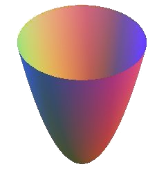

| Choisissez votre langue ! | Choose your language ! |
Préliminaires
Nous considérons une courbe paramétrée telle que définie :t → M(t)(x(t),y(t),z(t)) où t parcourt un I de ℝ et où pour tout t ∈ I le point M(t) reste dans un même plan.
Si nous effectuons maintenant une d'une telle courbe autour d'un axe, que se passe-t-il ?
Il est clair que la courbe est transformée en une autre courbe plane située dans un autre plan se déduisant du premier par la rotation.
Traitons le problème analytiquement dans un repère orthonormé \( \displaystyle \left ( O,\overrightarrow{u},\overrightarrow{v},\overrightarrow{w} \right ) \) où \( \displaystyle \overrightarrow{w} \) est un vecteur directeur de l'axe de la rotation.
Soit θ l'angle de la rotation relativement à l'axe orienté par \( \displaystyle \overrightarrow{w} \) .
La matrice de la rotation est donc :
\( \displaystyle \begin{pmatrix} {\cos(\theta)} & {- \sin(\theta)} & 0 \\ {\sin(\theta)} & {\cos(\theta)} & 0 \\ 0 & 0 & 1 \\ \end{pmatrix} \)
De sorte que les coordonnées de l'image du point M(t) par la rotation d'angle θ a pour coordonnées :\( \displaystyle \begin{pmatrix} {\cos(\theta)} & {- \sin(\theta)} & 0 \\ {\sin(\theta)} & {\cos(\theta)} & 0 \\ 0 & 0 & 1 \\ \end{pmatrix}\begin{pmatrix} {x(t)} \\ {y(t)} \\ {z(t)} \\ \end{pmatrix} = \begin{pmatrix} {x(t)\cos(\theta) - y(t)\sin(\theta)} \\ {x(t)\sin(\theta) + y(t)\cos(\theta)} \\ {z(t)} \\ \end{pmatrix} \)
Définitions
Preliminaries
We consider a parametric curve as defined :t → M(t)(x(t),y(t),z(t)) where t traverses an I of ℝ and where for all t ∈ I the point M(t) remains in the same plane.
If we now perform an of such a curve around an axis , what's going on?
It is clear that the curve is transformed into another plane curve located in another plane deduced from the first by the rotation.
Let's treat the problem analytically in an orthonormal frame \( \displaystyle \left ( O,\overrightarrow{u},\overrightarrow{v},\overrightarrow{w} \right ) \) where \( \displaystyle \overrightarrow{w} \) is a direction vector of the axis of rotation.
Let θ be the angle of rotation relative to the axis oriented by \( \displaystyle \overrightarrow{w} \) .
The rotation matrix is therefore:
\( \displaystyle \begin{pmatrix} {\cos(\theta)} & {- \sin(\theta)} & 0 \\ {\sin(\theta)} & {\cos(\theta)} & 0 \\ 0 & 0 & 1 \\ \end{pmatrix} \)
So that the coordinates of the image of the point M(t) by the rotation of angle θ has the coordinates:\( \displaystyle \begin{pmatrix} {\cos(\theta)} & {- \sin(\theta)} & 0 \\ {\sin(\theta)} & {\cos(\theta)} & 0 \\ 0 & 0 & 1 \\ \end{pmatrix}\begin{pmatrix} {x(t)} \\ {y(t)} \\ {z(t)} \\ \end{pmatrix} = \begin{pmatrix} {x(t)\cos(\theta) - y(t)\sin(\theta)} \\ {x(t)\sin(\theta) + y(t)\cos(\theta)} \\ {z(t)} \\ \end{pmatrix} \)
Definitions
Donc si C(θ) est la courbe obtenue par rotation de C d'un angle θ autour de Δ.
S est par définition la réunion de tous les ensembles C(θ) quand θ parcourt l'intervalle [0,2π[.
\( \displaystyle S = \underset{\theta \in \lbrack 0,2\pi\lbrack}{\bigcup}C(\theta) \)
So if C(θ) is the curve obtained by rotating C through an angle θ around Δ.
S is by definition the union of all sets C(θ) when θ covers the interval [0,2π[.
\( \displaystyle S = \underset{\theta \in \lbrack 0.2\pi\lbrack}{\bigcup}C(\theta) \)
\( \displaystyle \begin{pmatrix} {x(t)\cos(\theta) - y(t)\sin(\theta)} \\ {x(t)\sin(\theta) + y(t)\cos(\theta)} \\ {z(t)} \\ \end{pmatrix} \)
\( \displaystyle \begin{pmatrix} {x(t)\cos(\theta) - y(t)\sin(\theta)} \\ {x(t)\sin(\theta) + y(t)\cos(\theta)} \\ {z(t)} \\ \end{pmatrix} \)
- Une est obtenue en faisant tourner un grand cercle autour d'un diamètre.
- Un à base circulaire est obtenu en faisant tourner une droite parallèle à l'axe.
- Un est obtenu en faisant tourner une droite sécante à l'axe.
Pour voir ce qui se passe quand au lieu d'un cercle on fait tourner une ellipse autour de chacun de ses deux axes de symétrie, voir par exemple .
Exemple
L'animation qui suit vous permet de voir la génération d'une surface de révolution engendrée par la rotation de la parabole d'équation y=x² autour de l'axe Δ=Oy.- A is obtained by rotating a large circle around a diameter.
- A with a circular base is obtained by rotating a parallel line to the axis.
- A is obtained by rotating a secant line at the axis.
To see what happens when instead of a circle we rotate an ellipse around each of its two axes of symmetry, see for example .
Example
The following animation allows you to see the generation of a surface of revolution generated by the rotation of the parabola with equation y=x² around the axis Δ=Oy.
Equations cartésiennes
Comme dans le cas des surfaces réglées nous avons une caractérisation des points d'une surface de révolution par un système de 3 équations à 2 inconnues :\( \displaystyle \left\{ \begin{matrix} {x = x(\theta,t)} \\ {y = y(\theta,t)} \\ {z = z(\theta,t)} \\ \end{matrix} \right. \)
Il est parfois possible de résumer ce système en une seule équation du type f(x,y,z)=0, caractéristique de la surface.Cela peut se faire par une technique d'élimination. Par exemple calculer t en fonction de x et θ avec la première équation, puis porter le résultat dans les deux autres. Calculer ensuite θ en fonction de x et y avec la deuxième équation et porter dans la troisième.
En pratique la méthode ci-dessus conduit à des calculs assez complexes, de sorte qu'on aura souvent recours à des astuces pour parvenir à une équation simple.
Traitons par exemple le paraboloïde de révolution ci-dessus.
Soit θ un réel entre 0 et 2π posons pour simplifier c=cos(θ) et s=sin(θ), de sorte qu'on a c²+s²=1.
Soit \( \displaystyle \left ( O,\overrightarrow{i},\overrightarrow{j},\overrightarrow{k} \right ) \) le repère orthonormé initial et \( \displaystyle \left ( O,\overrightarrow{u},\overrightarrow{v},\overrightarrow{w} \right ) \) son transformé dans la rotation d'axe Oz et d'angle θ.
Soit M un point du paraboloïde de coordonnées (x,y,z) dans le repère \( \displaystyle \left ( O,\overrightarrow{i},\overrightarrow{j},\overrightarrow{k} \right ) \) et X,Y,Z dans le repère \( \displaystyle \left ( O,\overrightarrow{u},\overrightarrow{v},\overrightarrow{w} \right ) \)
En utilisant les formules :
X=cx-sy
Y=sx+cy
Z=z
et en écrivant que Y=0 et Z=X2, il vient x2+y2-z=0.
Vous pourrez dans établir d'autres formules liées à la rotation d'une hyperbole.
Cartesian equations
As in the case of ruled surfaces, we have a characterization of the points of a surface of revolution by a system of 3 equations with 2 unknowns:\( \displaystyle \left\{ \begin{matrix} {x = x(\theta,t)} \\ {y = y(\theta,t)} \\ {z = z(\theta,t)} \\ \end{matrix} \right. \)
It is sometimes possible to summarize this system in a single equation of the type f(x,y,z)=0, characteristic of the surface.This can be done by an elimination technique. For example, calculate t as a function of x and θ with the first equation, then carry the result into the other two. Then calculate θ as a function of x and y with the second equation and carry over to the third.
In practice the above method leads to quite complex calculations, so that one will often resort to tricks to arrive at a simple equation.
Let's treat for example the paraboloid of revolution above.
Let θ be a real number between 0 and 2π let us put for simplicity c=cos(θ) and s=sin(θ), so that we have c²+s²=1.
Let \( \displaystyle \left ( O,\overrightarrow{i},\overrightarrow{j},\overrightarrow{k} \right ) \) the initial orthonormal frame and \( \displaystyle \left ( O,\overrightarrow{u},\overrightarrow{v},\overrightarrow{w} \right ) \) its transformed in the rotation of axis Oz and angle θ.
Let M be a point of the paraboloid with coordinates (x,y,z) in the frame \( \displaystyle \left ( O,\overrightarrow{i},\overrightarrow{j},\overrightarrow{k} \right ) \) and X,Y,Z in the frame \( \displaystyle \left ( O,\overrightarrow{u},\overrightarrow{v},\overrightarrow{w} \right ) \)
Using the formulas:
X=cx-sy
Y=sx+cy
Z=z
and writing that Y=0 and Z=X2, it comes x2+y2-z=0.
You can in establish other related formulas to the rotation of a hyperbola.
|
Création Gilles Dubois
Created by Gilles Dubois
|
Janvier 2022
January 2022
|
Version mobile Jquery
Mobile Jquery version
|
|